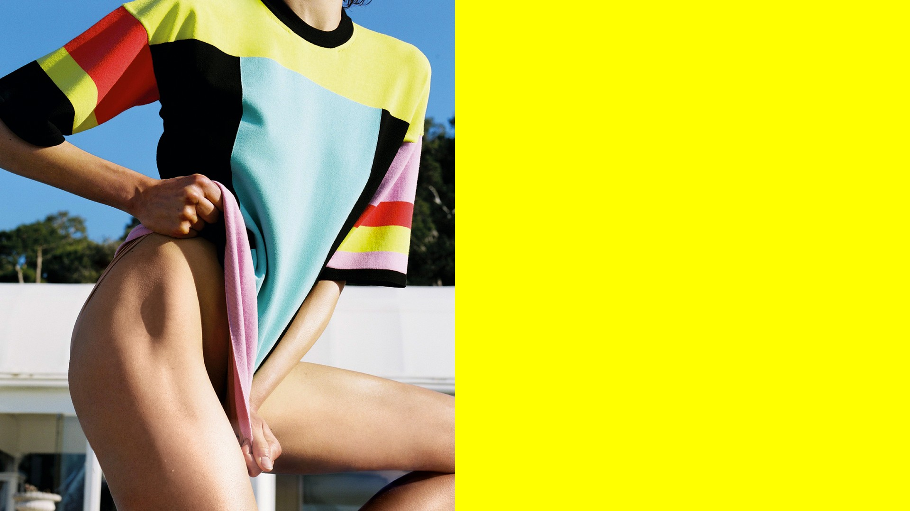
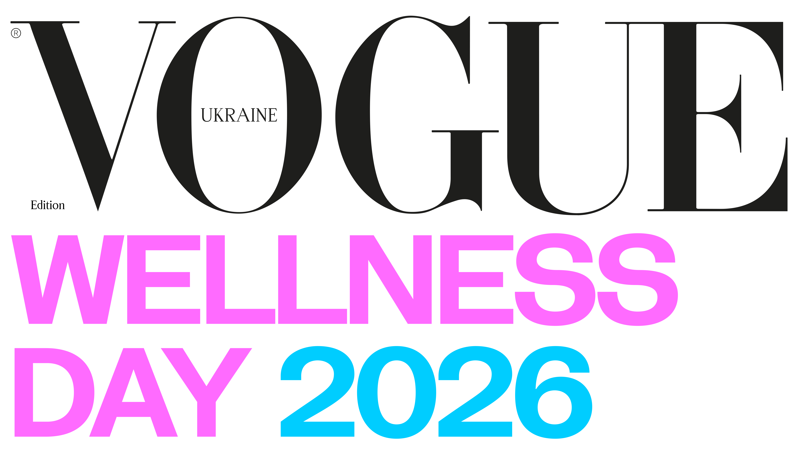
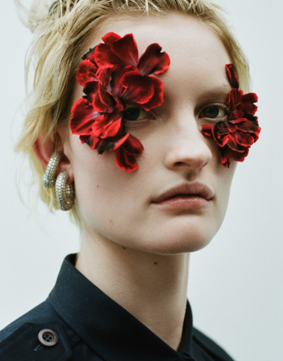
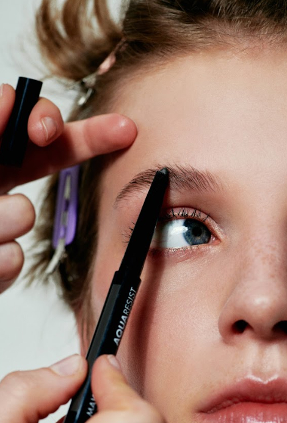
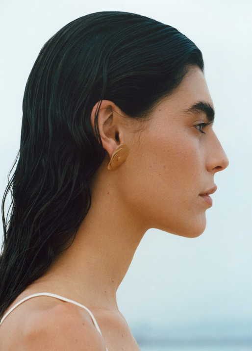
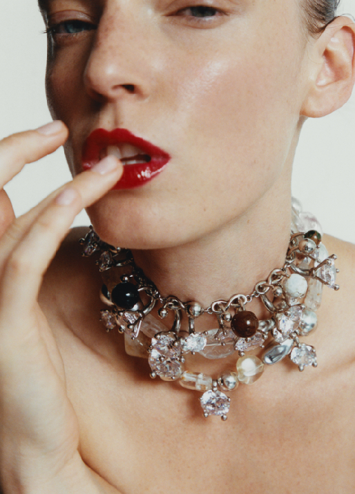
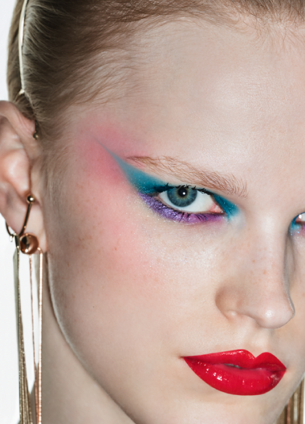

24–25 червня
Edem Kyiv (с. Козин)


24–25 червня
Edem Kyiv (с. Козин)
Український Vogue запрошує на дводенний б’юті-ретрит — Vogue Ukraine Wellness Escape. Захід відбудеться в заміському комплексі Edem Kyiv у передмісті столиці й об’єднає провідних представників б’юті-індустрії та ентузіастів свідомого догляду за собою.
На гостей чекають захопливі розмови з зірковими лікарями, провідними нутриціологами та експертами велнес-індустрії, тілесні практики, воркшопи з фітнес-тренерами, фешн- і б’юті-сесії зі стилістами, відвідання зон спа-досвіду і персонального догляду. Під час події можна буде поспілкуватися з командою українського Vogue і отримати фахові поради від постійних контрибуторів видання — професіоналів індустрії моди та краси.
Vogue Ukraine Wellness Escape стане подорожжю у світ кастомного догляду та експертних знань і подарує незабутні естетичні враження у затишній локації на лоні природи.
Детальна програма буде опублікована незабаром.

Найавторитетніші українські експерти з нутриціології й біохакінгу поділяться секретами балансу в їжі та способі життя, якого потребує сучасна людина. У програмі — вся правда про нові принципи харчування. Як діяти, коли стрес стає фоновим, а гормональний дисбаланс впливає на тіло й емоційний стан.
У програмі:
Персональні консультації з зірковим пластичним хірургом.
Діагностика та курований досвід тестування засобів для догляду і макіяжу, секрети турботи про шкіру голови.
Майстер-класи від редакторів і постійних контрибуторів Vogue Ukraine. Як вписати стиль sport chic у сучасний повсякденний гардероб, адаптувати тренди і сформувати власний стиль.

Адепти фітнесу та йоги з багатотисячною аудиторією поділяться авторськими вправами й секретами догляду за тілом. Лайт-тренування та спеціальні класи в заспокійливій атмосфері Edem Kyiv для швидкого перезавантаження.
Стилістка Соня Солтес проведе флористичний воркшоп. Взаємодія з природними формами, фактурами й ароматами допомагає переключити увагу, знизити рівень тривожності й відновити внутрішній баланс.

Квиток на Vogue Wellness Escape відкриває доступ до всіх активностей протягом двох днів (з 11:00 24 червня до 18:00 25 червня).
У вартість входять healthy-обіди та коктейлі.
Також гості отримають б’юті-бокси з подарунками від партнерів Vogue Ukraine Wellness Escape.
Частину прибутку від продажу квитків буде спрямовано до фонду Veteranka.
За бажанням гості зможуть залишитися на ніч у Edem Kyiv, щоб повністю прожити досвід Vogue Ukraine Wellness Escape — від вечірніх активностей до ранкових практик наступного дня.
Для учасників події діє спеціальна пропозиція на проживання в Edem Kyiv.
Промокод та деталі бронювання гості отримають після купівлі квитка.


Кандидатка медичних наук, лікарка дієтологиня-ендокринологиня, експертка з функціональної медицини й фудтерапії з 15-річним досвідом, Катерина Толстікова є авторкою трьох книг про харчування, контроль ваги й боротьбу зі стресом. Спікерка міжнародних наукових конференцій, членкиня Американської асоціації функціональної медицини, особиста дієтологиня професійних спортсменів. Заснувала навчально-науковий проєкт “Академія Здоров’я доктора Толстікової”.

Окулопластична хірургиня, кандидатка медичних наук, провідна спеціалістка з 25-річним досвідом, експертка в естетичній та реконструктивній хірургії повік у дітей та дорослих і засновниця клініки Barinova Oculoplastics. Анна Барінова єдина в Україні пройшла річне міжнародне стажування з окулопластики в США. Є сертифікованою лікаркою з практикою в Дубаї.

Лікарка, кандидатка медичних наук, у 2014 році Наталія заснувала косметичний бренд Instytutum, засоби якого дарують номінантам і переможцям премії "Оскар". Як науковиця, що спеціалізується на антивіковому догляді, Бобок очолила команду провідних швейцарських фахівців і представила інноваційний longevity-комплекс для підтримки клітинних функцій організму, зниження біологічного віку й здорового довголіття.

Художниця з костюмів і стилістка, яка працювала з брендами Ksenia Schnaider, Ruslan Baginsky, Frolov та українськими зірками шоу-бізнесу Джамалою, Onuka й Максом Барських. 2019 року створила марку авторських прикрас Lutiki. Досліджує садівництво як продовження стайлінгу з мрією зробити власний сад простором для ментального відновлення й творчості.

Кандидатка біологічних наук, популяризаторка науки, авторка численних статей в галузі тканинної інженерії, регенеративних технологій, хронобіології та нейрохімії. Співзасновниця науково-популярної ініціативи Nobilitet та аромастартапу “розумних запахів” Needorium. Написала книжки “Коли я нарешті висплюся?” (у співавторстві з Нікою Бєльською), що допомагає налагодити здоровий сон, і “Пригоди клітин” про функціонування людського організму.

Дзюдоїстка, бронзова призерка Олімпійських ігор 2020 року, триразова чемпіонка Європи та дворазова чемпіонка світу. Після перемоги на чемпіонаті світу 2018 року Дар’я Білодід у свої 17 встановила рекорд, ставши наймолодшою чемпіонкою серед дорослих в історії дзюдо. Велнес-інфлюенсерка, амбасадорка українських і світових брендів.

Зірка українського балету, солістка Національної опери України, Катерина Кухар танцювала головні партії у постановках “Ромео і Джульєтта”, “Жизель”, “Лісова пісня”, “Сильфіда”. Ініціаторка та організаторка міжнародних балетних фестивалів і благодійних вистав. 2018 року відзначена званням Народної артистки України. З 2020-го очолює Київський державний фаховий хореографічний коледж, де виховує нове покоління танцівників.

Шеф-кухар компанії Edem Family, ентузіаст і популяризатор нової української кухні. Стажувався у тризірковому мішленівському ресторані Geranium в Копенгагені, закладі з однією зіркою Мішлен Costes Downtown у Будапешті та Central у Лімі, що двічі визнавався найкращим у світі за версією авторитетного рейтингу The World's 50 Best Restaurants. Розробив унікальне меню для буковельського бутик-готелю HAY на основі локальних українських продуктів, а нині створює особливу їжу в Edem Kуiv.

Шеф-кухарка напрямку Green Cuisine в Edem Resort Medical & Spa, Христина є спеціалісткою з 19-річним стажем у галузі гастрономічного біохакінгу. Стажувалась за напрямком високої здорової кухні у Франції. Засновниця кулінарної школи домашніх шеф-кухарів Edem College Cuisine та власного проєкту сталої локальної кухні “Квітка життя”. Лекторка Міжнародного університету нутриціології та дієтології IUND при Edem Clinic.

Редакторка відділу краси Vogue Ukraine, журналістка з 17-річним досвідом, Альона Пономаренко має магістерську ступінь з права. Залишила юридичну кар’єру, щоби писати про красу, ментальне здоров’я та прийняття себе. Курує великі соціальні проєкти українського Vogue та б’юті-додаток, є редакторкою великого щорічного видання Vogue Ukraine Beauty Special постійною контрибуторкою чеського Vogue.
Реєстрація. Знайомство з територією Edem Resort Kyiv
Ранковий healthy-коктейль
Презентація друкованого випуску Vogue Ukraine Beauty Special 2026
Спікерка: Катерина Толстікова, лікарка дієтологиня-ендокринологиня, кандидатка медичних наук, авторка бестселерів про здорове харчування, особиста дієтологиня професійних спортсменів
Тест-драйв автомобілів MINI Countryman
АБО
Розслаблювальна розминка босоніж з олімпійською призеркою з дзюдо Дар’єю Білодід
Тест-драйв автомобілів MINI Countryman
АБО
Квест-підготовка до сесії Vogue UA Garden Therapy
Авторське велнес-меню від шеф-кухарки напрямку Green Cuisine в Edem Resort Medical & Spa Христини Федочинської
Спікерка: науковиця, кандидатка медичних наук, засновниця швейцарського бренду Instytutum Наталія Бобок
Спікерка: окулопластична хірургиня, кандидатка медичних наук, експертка в естетичній та реконструктивній хірургії повік і засновниця клініки Barinova Oculoplastics Анна Барінова.
З 16:00 до 19:00 доступні індивідуальні консультації хірургині за попереднім записом.
Майстер-клас проводить стилістка, ентузіастка гарден-терапії Софія Солтес
DJ-сет від DJ Domnitsa
Авторські страви від шеф-кухаря Edem Kyiv Андрія Мацюти
Невимушене дружнє спілкування під сети DJ Domnitsa та DJ Rustam
Запис на велнес-активності дня
Практика терапевтичного письма з поетесою, авторкою двох збірок Дарʼєю Лісіч
Тест-драйв автомобілів MINI Countryman
АБО
Клас барре із прима-балериною Катериною Кухар
Тест-драйв автомобілів MINI Countryman
АБО
Практика саунд-хілінгу від…Divya Svara
Розмова із сексологинею Оленою Архипенко та співзасновницею простору N'joy Світланою Павелецькою про грані чуттєвості та прийняття себе
Розмова з біологинею Ольгою Масловою
Коктейль у барі Baccara Edem Kyiv. Завершення вечора.
Автомобільний партнер MINI Україна знайомить гостей з MINI Countryman — автомобілями, що поєднують комфорт і практичність та створюють відчуття внутрішнього балансу, органічно доповнюючи концепцію wellness. Тим, хто цінує яскраві емоції, сподобається MINI John Cooper Works, що дарує особливе враження свободи та драйву за кермом. Гості зможуть випробувати автомобілі під час тест-драйвів мальовничими маршрутами передмістя Києва та відчути MINI у власному ритмі. Серед них будуть розіграні персональні тест-драйви, щоб продовжити знайомство вже у повсякденному житті.
